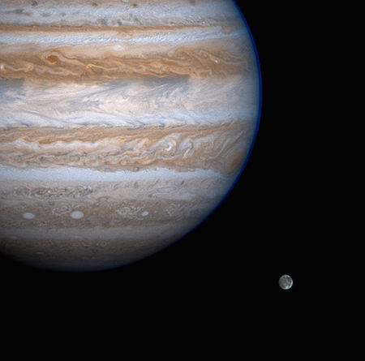

Jupiter is the biggest planet in our solar system. It's similar to a star, but it never got massive enough to start burning. It is covered in swirling cloud stripes. It has big storms like the Great Red Spot, which has been going for hundreds of years. Jupiter is a gas giant and doesn't have a solid surface, but it may have a solid inner core about the size of Earth. Jupiter also has rings, but they're too faint to see very well.

Here you can see Jupiter and one of its many moons, Ganymede.

This picture is actually four pictures taken by Cassini put together. The dark spot on the left is the shadow from Jupiter's moon Europa.

This picture taken by Voyager 2 shows the Great Red Spot.